Published: 2022-07-27
Source link: https://www.cnphotos.net/academy/show-72.html
In photography, the use of light is critical. Like composition, light needs control. Which light should you use, and which should you not? We find ideas in the works below.
The simpler the light, the easier it is to control. The more complex the light, the easier the frame gets out of control. For beginners, try shooting some photos in low light. It is easier to find the feel of using light. Below we first look at a group of photos and find what they share.
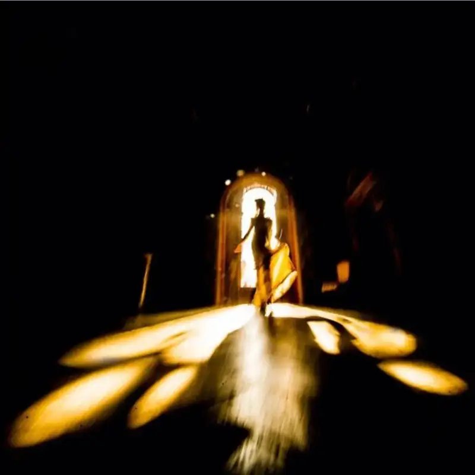
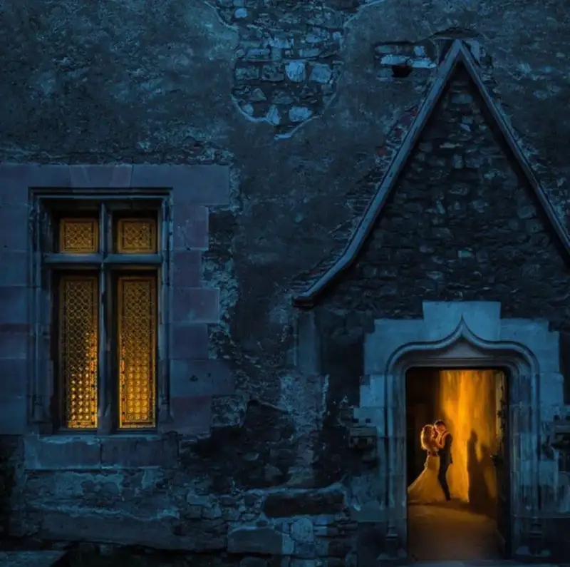
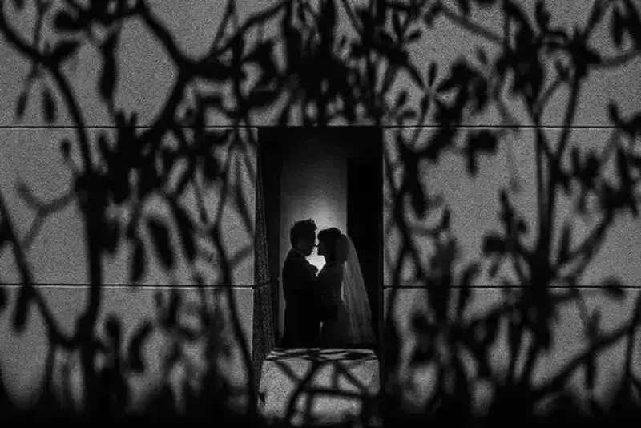
The photos above share one thing: all the subjects sit at the brightest point of the frame. Besides this, what other tips are there? The ideas below are for your reference.
Using light in photography is not only to capture the details on a person. More important is to find the line where light meets shadow. Even if the subject is underexposed, the frame can still look beautiful.
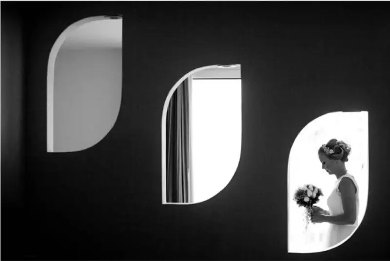
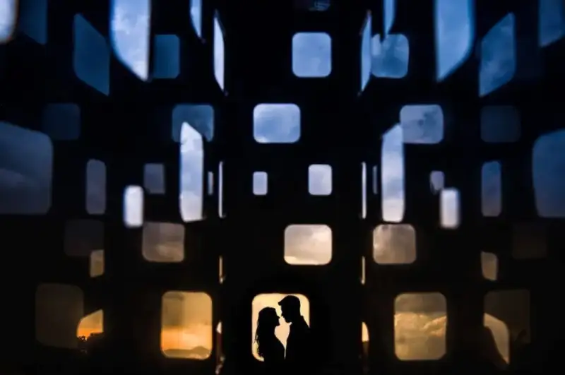
A frame with light-dark contrast draws the eye. A black background brings out the person best. When the ambient light is weak, white clothes make the person stand out from the dark background.
When you shoot indoors, turn off the lights of different colors. A single light source makes the skin look cleaner.
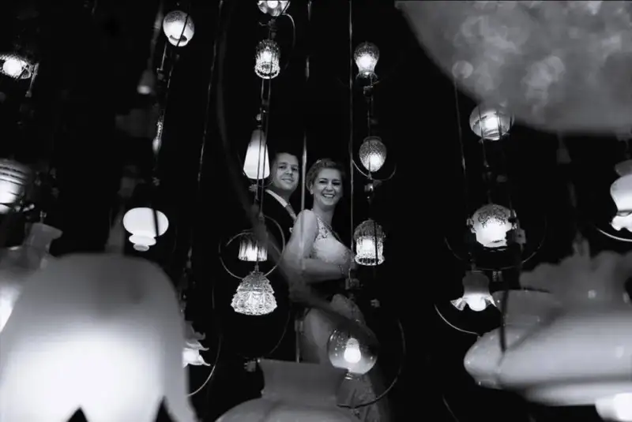
On an overcast day, it is hard to make a high-contrast photo without fill light. But you can try placing the model in the dark. Use the cover of a building and meter for the bright area. This gives a clean silhouette.
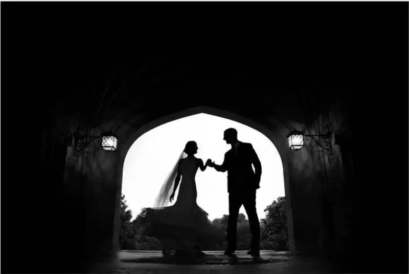
When the light is blocked, if everyone stands in the bright area to shoot, some people will be in shadow. Then you cannot expose everyone correctly. So it is best to have them stand in the dark and shoot a silhouette.
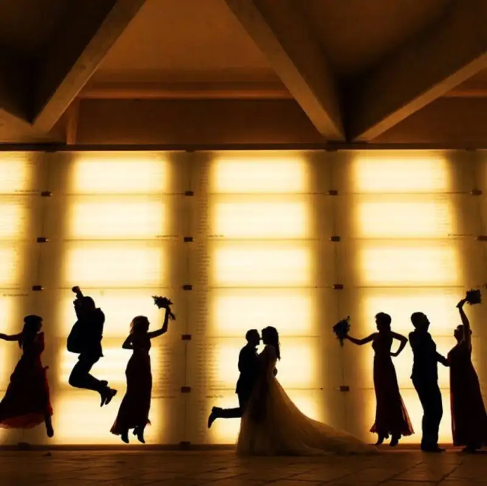
When the light is very weak, consider the opposite. Place the person at the brightest point of the frame. Use the cover of a building and frame-within-a-frame composition to bring out the light-dark contrast.
A very bright noon is not a bad time to shoot. The key is where you choose to shoot.
Then choose to shoot in tree shade or the shadow of a building. The light through the gaps is soft. It fits placing the person in the bright part of the frame to light up the face.
Shooting under strong light with an occluder keeps the skin details and adds expression to the setting.
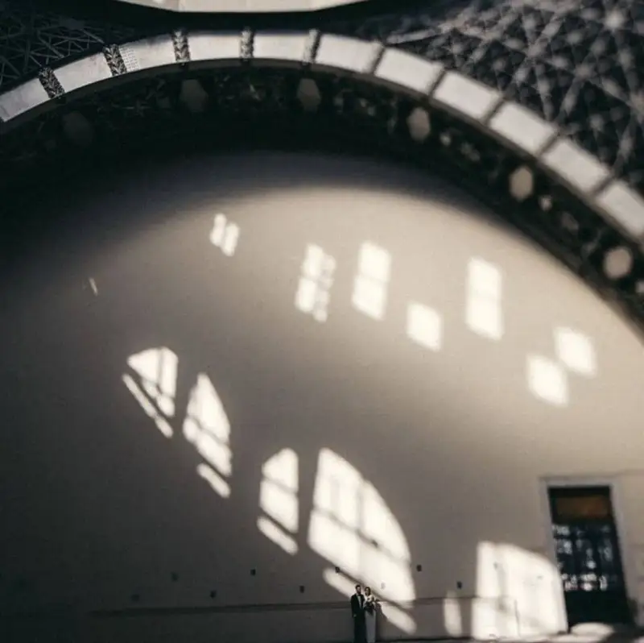
Find a single source to light the subject, such as a single indoor source: a hanging lamp, a desk lamp, or a street lamp.
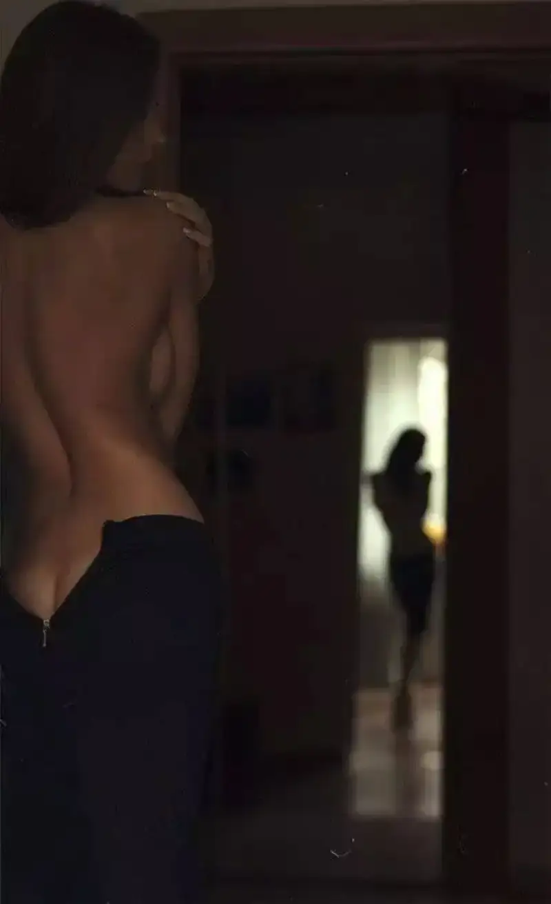
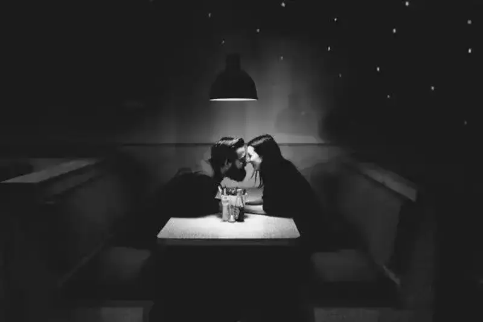
A single indoor light source
Making a single source with a candle
A shadow, a prop, or a flash can all serve as a single source. When the source is single, the colors and the light-to-dark transition look natural. Stray light and noise do not disturb the frame, and room is left for later color grading and noise reduction.
The narrower the light, the stronger the light-dark relation, and the more you can darken the setting. Light leaking through a door crack or a window is a good narrow source.
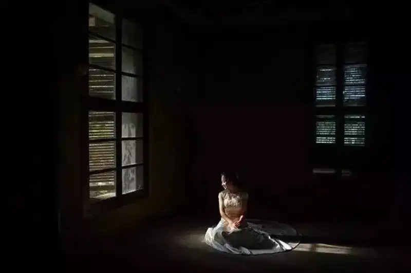
Have the model face the window. Shooting from the side makes the figure look slimmer.
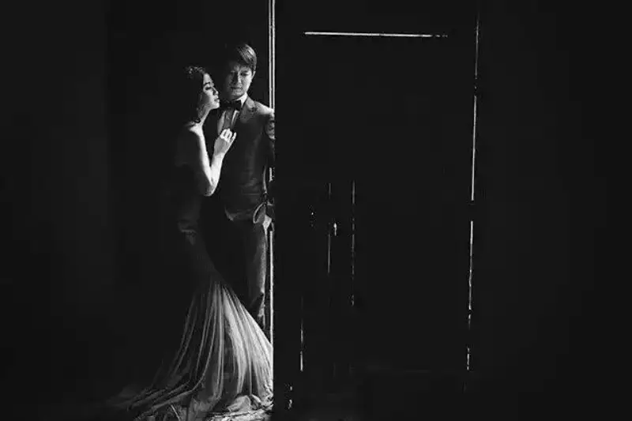
Darken the setting to show a black-and-white minimal style.
With a narrow source blocked by a building, you use the light-dark relation of the setting. The choice of the model's position is critical.
At dusk you can shoot with indoor light. Indoor light can mimic backlight and also form a warm-cool contrast with the outdoors. With both light contrast and color contrast, the frame draws attention.
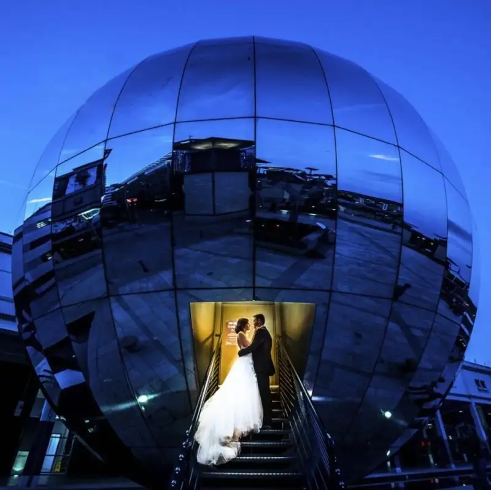
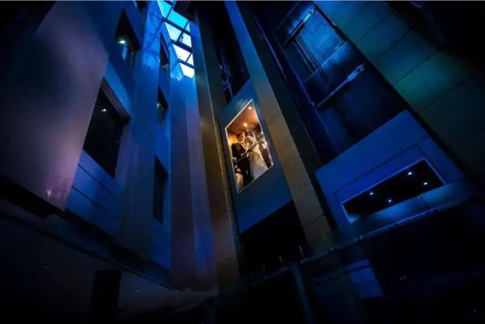
When you use natural light, such as on an overcast day or in strong light, you can improve the light-dark contrast by placing the model.
Then just remember one rule: place the model on the line between light and dark. Doors and windows are where the divide is clearest, and they are the best spots to shoot.
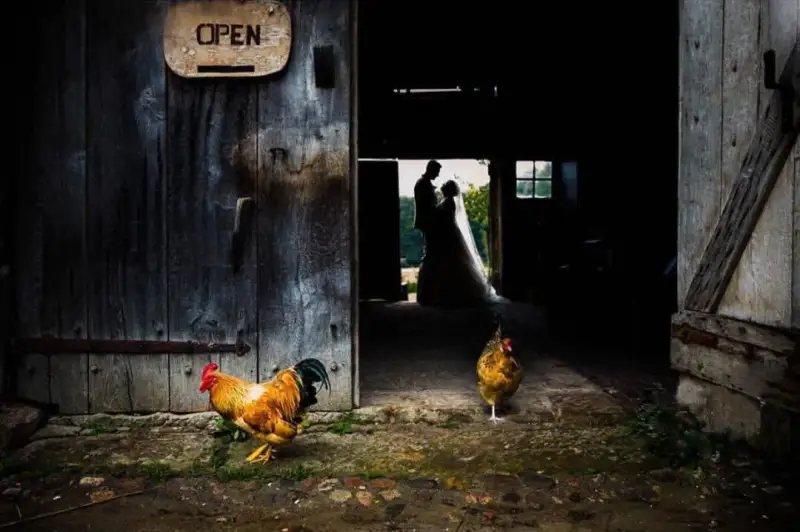
Use the composition of the frame to divide the light.
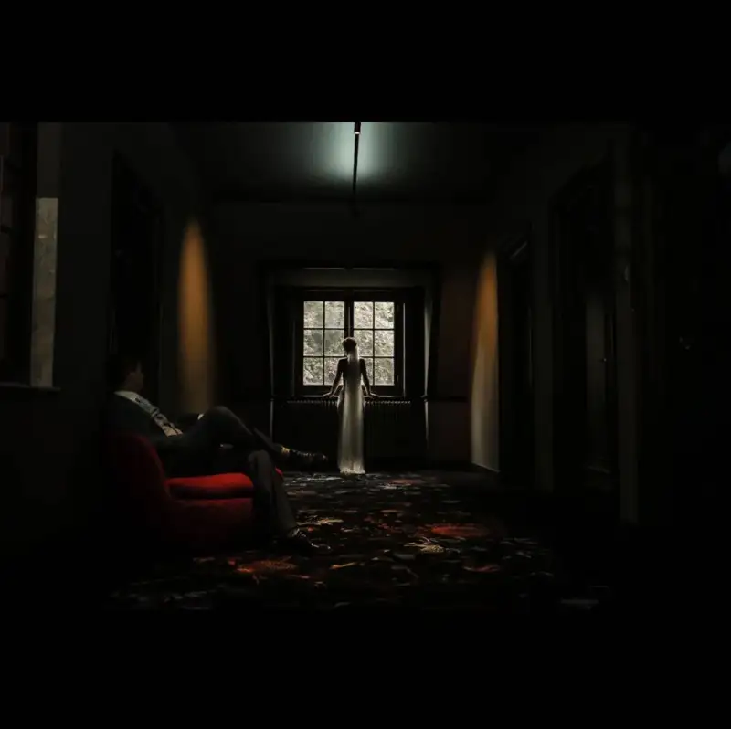
The light contrast between indoors and outdoors.
When you use light well, you do not worry about the subject standing out. Often, the smaller the main figure, the more mood the frame has.
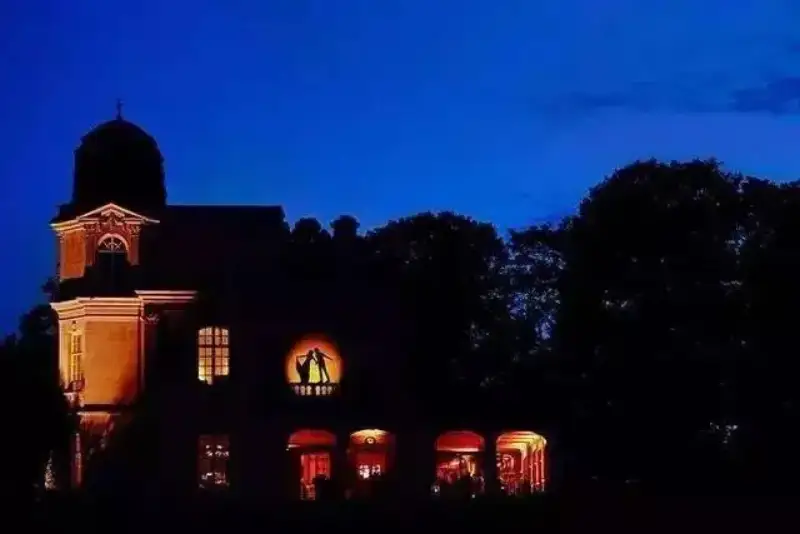
Place a light behind the main figure and use the light to draw a rim. This is a common trick for many photographers.
In low light, a rim light from behind brings out the subject. A bit of surroundings gives the frame more to see. But the ambient brightness must not exceed the rim light.
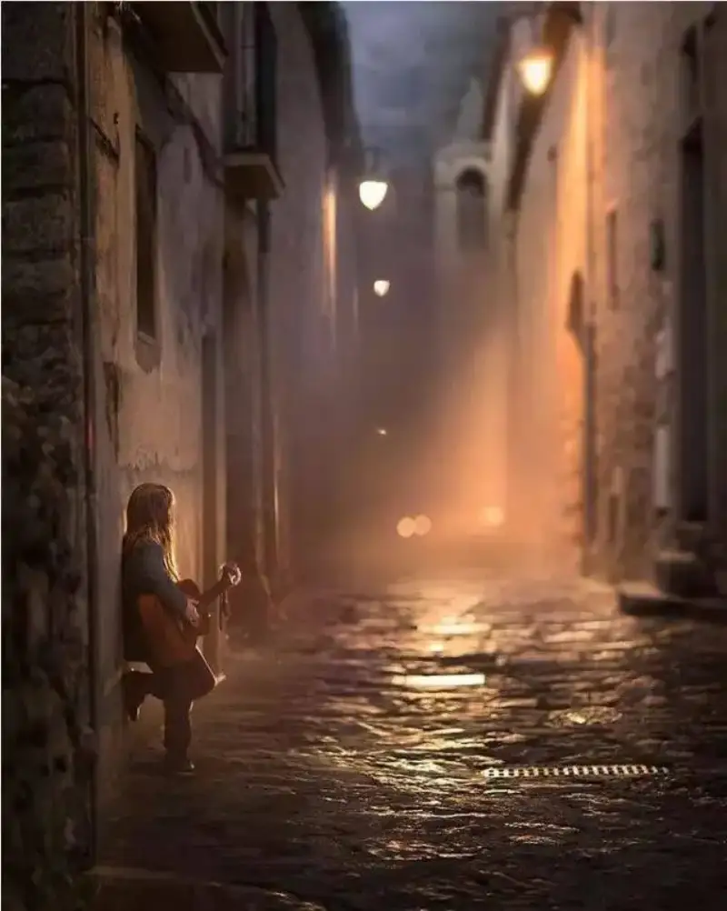
A street lamp can also serve as rim light.
When the light is dim, do not raise the exposure. Instead, lower it and let the setting go dark. You do not need to make the shadows clear. Underexpose the setting as much as you can.
In fact, the trick of shooting in dim light is to find a single source and darken the setting to bring out the subject. This is the so-called light-pressing technique.
Once you know the light-pressing technique, you can make interesting silhouettes in low light. The key to learning photography is to master the craft, then use imagination and creativity on top of it.